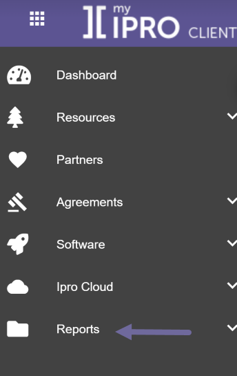
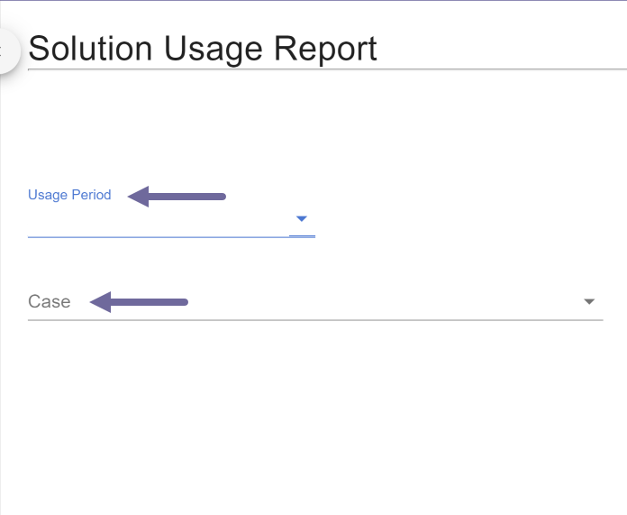
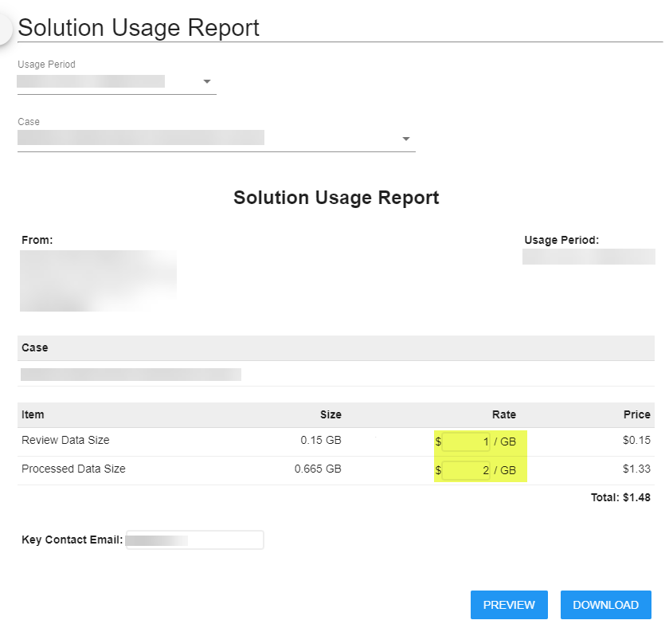
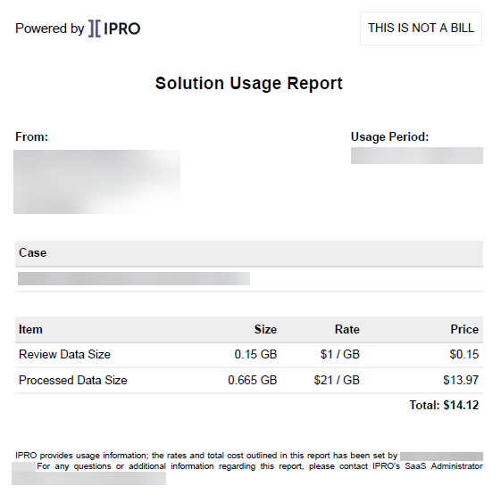

Log into https://my.ipro.com/client to access the report.
Select Reports from the menu.

On the Solution Usage Report page, enter the Usage Period and the Case you want to generate the report for.

Enter a dollar value per gigabyte for the processing and review items on the report.

Preview or download the report.
The report is generated.

|
|
Note: The Processed Data Size is calculated based on the job date instead of averaging all time. Review Data Size is calculated based on averaging all time. |